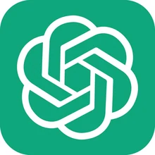

Most businesses have stopped asking whether to give their people an AI assistant. The question now is which one. Three names dominate almost every shortlist: Microsoft Copilot, ChatGPT and Claude. They overlap a great deal, and any of them will make a motivated employee more productive. The differences that actually matter for a business are narrower than the marketing suggests: where the assistant lives, what it is genuinely best at, and how it handles your data.
Here is the honest headline before the detail. The tool you pick matters less than whether your people use it well. A best-in-class assistant that sits unused, or gets used carelessly, returns nothing. We come back to that at the end. First, the comparison.
The three assistants at a glance
Microsoft Copilot
Microsoft's assistant, built directly into the Microsoft 365 apps your teams already use: Teams, Word, Outlook, PowerPoint and Excel. It runs on OpenAI's models combined with Microsoft Graph, so it can reason over your own emails, files and meetings with the permissions a user already has. Copilot is the natural default when your organisation lives in Microsoft 365, because the assistant meets people inside the work rather than in a separate tab.
ChatGPT
OpenAI's assistant, and the one most of your employees will already recognise. It is the most versatile general-purpose chatbot, with the widest ecosystem: custom GPTs, the GPT Store and a mature API for building AI into your own tools. ChatGPT is the strongest all-rounder for research, drafting and content, and the easiest to extend into bespoke, no-code assistants for specific teams.
Claude
Anthropic's assistant, known for handling long documents and large context, careful reasoning, and a safety-first design. Claude is the one document-heavy and analysis-heavy teams tend to prefer: due diligence, policy review, research synthesis and drafting across many sources. Its Projects and Skills also make it strong for building reusable, consistent workflows.
Copilot vs ChatGPT vs Claude, side by side
| What matters | Microsoft Copilot |  ChatGPT |
 Claude Claude |
|---|---|---|---|
| Made by | Microsoft | OpenAI | Anthropic |
| Where it lives | Inside the Microsoft 365 apps | Standalone app and API | Standalone app and API |
| Standout strength | Working inside your own documents, email and meetings | Versatility and custom GPTs | Long documents and careful reasoning |
| Custom build | Copilot Agents and Copilot Studio | Custom GPTs and the GPT Store | Projects and Skills |
| Data handling (business tier) | Only data a user can already access; not used to train the model | Not used to train the model | Not used to train the model by default |
| Best first users | Everyone in Microsoft 365 | Broad workforce, content and research roles | Analysts, legal, research and document-heavy roles |
Where Microsoft Copilot fits
If your organisation runs on Microsoft 365, Copilot is the lowest-friction way to put AI in front of the whole workforce, because it appears inside the tools people already open every day. The value shows up in the ordinary jobs: catching up on a Teams meeting, drafting in Word, clearing an Outlook thread, building a first-pass deck, or exploring a spreadsheet in Excel. The risk is that a licence gets switched on and little changes, because people never learn where Copilot earns its keep. That is exactly what our Microsoft Copilot training for business is built to fix.
Where ChatGPT fits
ChatGPT is the assistant to reach for when you want maximum flexibility and a fast route to custom tools. It is excellent for research, drafting, summarising and content creation, and its GPT Builder lets non-technical teams stand up their own tuned assistants without code. For many organisations it becomes the general-purpose brainstorming and drafting partner that sits alongside their core productivity suite. Our ChatGPT training for business covers prompting, the API and building custom GPTs, applied to real business use cases.
Where Claude fits
Claude comes into its own on substantial, document-heavy work. When the task is to read across a stack of contracts, synthesise a set of research papers, or interrogate a long policy, Claude's large context and measured reasoning are a genuine advantage. Its Projects and Skills turn one-off prompting into repeatable team workflows. Our Claude training for business runs from orientation through long-context document work to building those reusable workflows.
So which should your business choose?
It depends on where your work happens, and it is increasingly normal to use more than one. Organisations standardised on Microsoft 365 usually make Copilot the default for everyday productivity. Teams that want a flexible, general-purpose assistant and custom GPTs lean towards ChatGPT. Analysts, legal, research and other document-heavy functions get the most from Claude. Plenty of enterprises deploy two of the three, with clear internal guidance on which tool to use for which job.
The real differentiator is adoption, not selection
Whichever assistant you choose, the return does not come from the licence. It comes from whether your people actually use it, use it well, and use it safely. This is where most rollouts stall. Generic tool training teaches the features, but leaves each person to guess where the assistant fits their own work, so it gets tried once and quietly abandoned.
Kubicle closes that gap the same way for every tool. Alongside an accredited course, we produce training and assets in the language of your organisation: context videos, applied exercises and guided workplace tasks tied to real scenarios in your business. So a learner finishes knowing exactly which of their weekly jobs the assistant should do, and how to stay accountable for the output. See how that works across the workforce in our AI training for organisations program, or at the individual level in AI training for employees.
Frequently asked
Which AI assistant is best for business?
There is no single winner. Copilot suits Microsoft 365 organisations, ChatGPT is the most versatile all-rounder, and Claude is strongest on long-document analysis. The deciding factor is usually adoption rather than the tool itself.
Can a business use more than one?
Yes, and many do. A common pattern is Copilot for everyday productivity inside Microsoft 365, with ChatGPT or Claude given to specific teams for research, content or document work.
Is our data safe?
On the business and enterprise tiers, your prompts and data are not used to train the providers' models, and Copilot only accesses data a user can already see. Safe use still depends on a clear AI use policy and training on what never to paste in and how to review every output.
Ready to turn a licence into adoption? Explore Kubicle's tool-specific programs for Microsoft Copilot, ChatGPT and Claude, all part of the AI Academy.